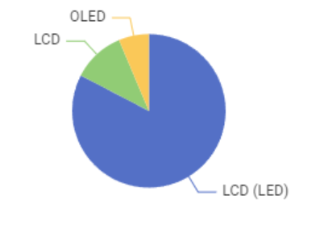
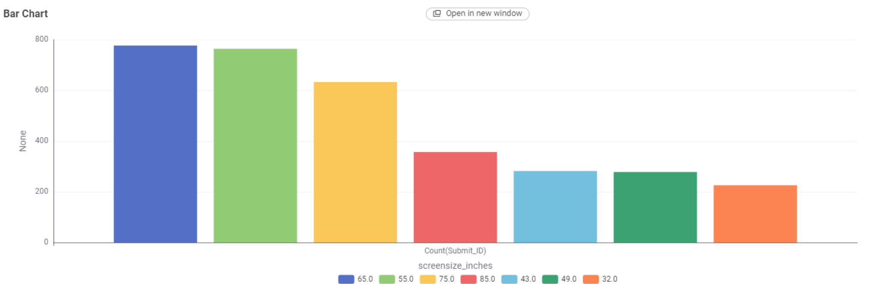
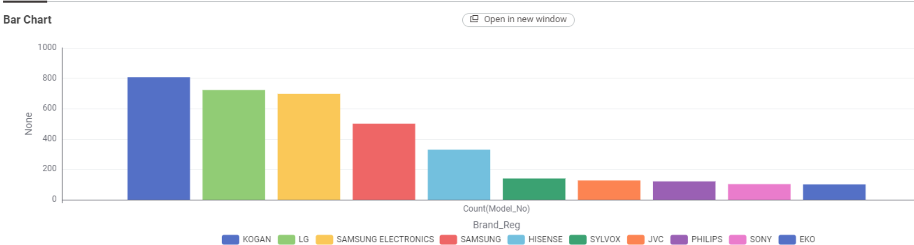
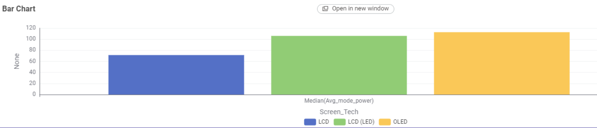
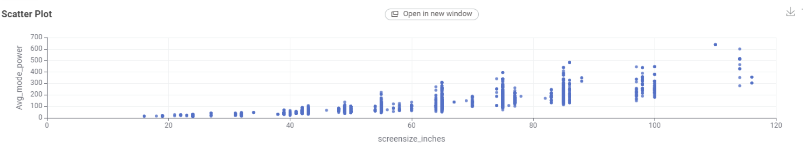
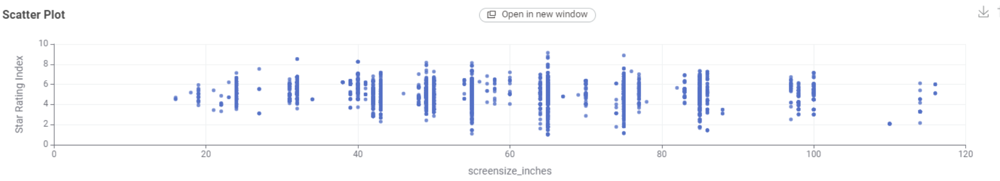

TV Energy Insights: A Data Story
This section is compiled using datasets from the Australian Government. The purpose of this section is to inform Australian consumers on the types of available television models on the market and help them choose the right one.





